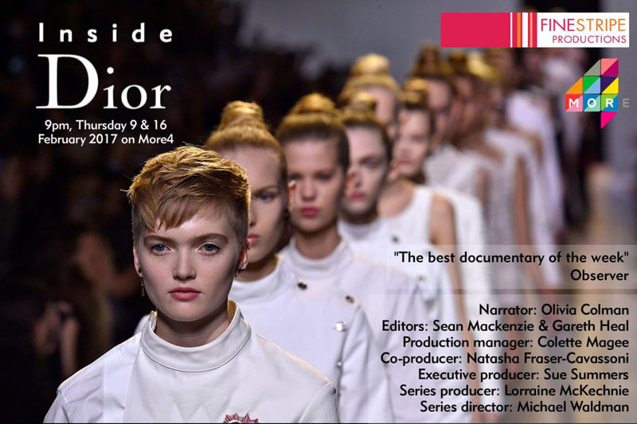

A new two-part observational documentary series starting on Thursday, 9 February at 9pm on More4.
We've had a busy start to the year at tpr media. Last month we celebrated the André Simon Food & Drink Book Awards at the Goring Hotel, where Chinese food expert Fuchsia Dunlop and Bake Off talent Ruby Tandoh both won prizes. We loved getting stuck into all the shortlisted publications, but our "tpr hot pick" would have to be Longthroat Memoirs: Soups, Sex and Nigerian Taste Buds, a fascinating read by emerging African food writer Yemisi Aribisala.
We also enjoyed learning about what went on behind the scenes during the filming of Danny Boyle's T2 Trainspotting from our SFX client Artem – the coolest team in the business. Guardian columnist Zoe Williams visited Artem's London studios to find out more about how the creative technicians went about building blood rigs, a breakable toilet(!) and an impressive range of atmospheric effects.
Alongside this, we've been working on Fiona Murphy's informative and passionate documentary, Remember Baghdad, which presents an unmissable insight into the story of Iraq through the eyes of the Jews who lived there for 2,600 years until only a generation ago. We're looking forward to a lively festival season, bringing the film to wider audiences and attracting the recognition we believe it deserves.
We're also preparing for Emporium Productions' Inside the Freemasons, a new five-partdocumentary series on SKY 1 about what it means to be a Freemason in the 21st century. From the regalia to the theunbreakable bonds of brotherhood, just how relevant is Freemasonry in the 21st century?
But before all that we wanted to tell you all about Inside Dior from Finestripe Productions, a new two-part observational documentary series starting tonight at 9pm on More4. Trust us, you won't want to miss this treat – but if you don't believe us, read this glowing feature from the Telegraph.
In the run-up to London Fashion Week (17-21 February 2017), the series takes an exclusive behind-the-scenes look at Dior's billion-dollar brand on its 70th birthday, providing a talking point for discussions about fashion and female identity. Director Michael Waldman revealed more about the filming in a blog post for Huffington Post.
With all this going on, we can still find time for exciting new campaigns. So drop us an email if you've got projects on the horizon, large or small, that we could help with. It's always good to plan ahead so make sure you give us enough notice. We're always happy to chat ideas through over a coffee.